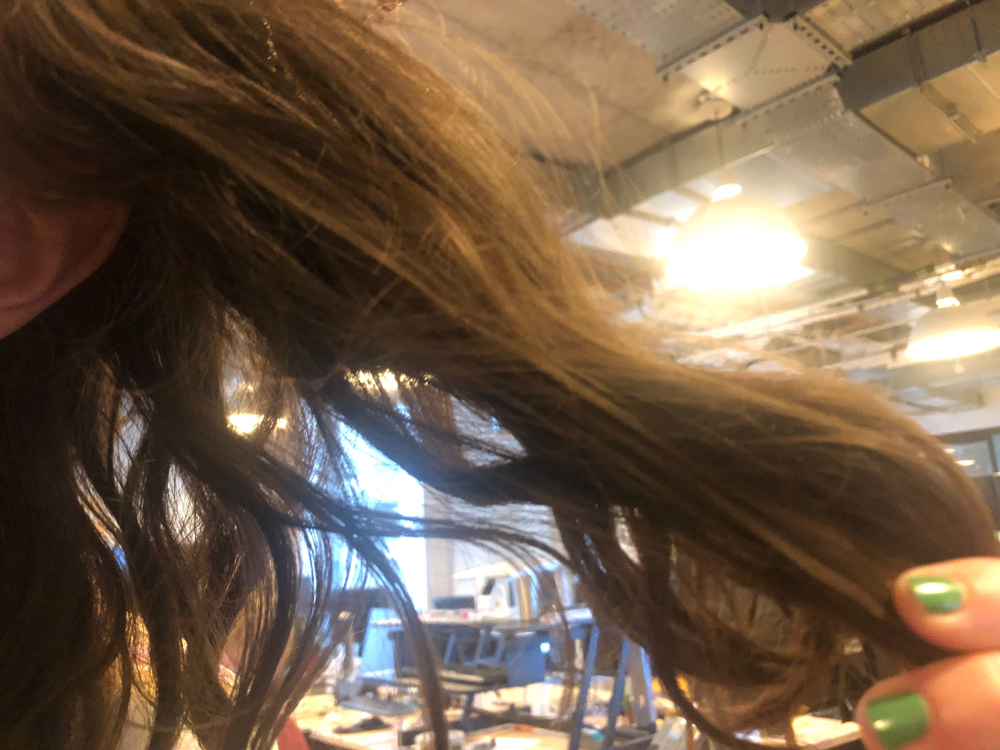
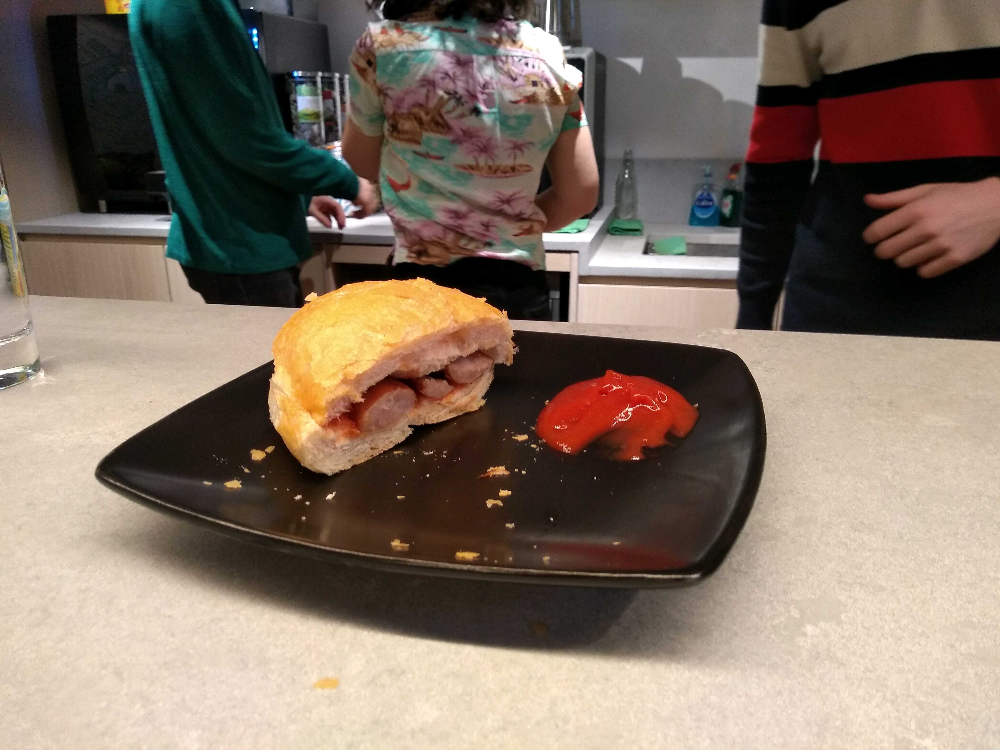
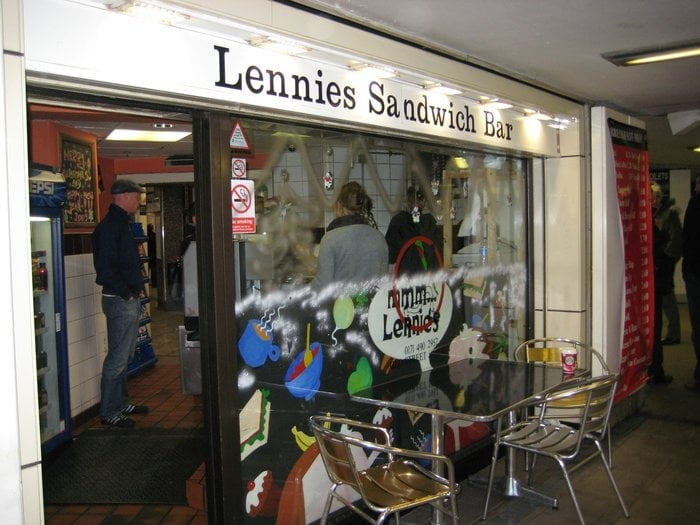

2019-05-03 Aiden' Assks
Why isn`t london called england CIty?? like mexico/

Why isn`t london called england CIty?? like mexico/
had a fresh cut yesterday. There was a lot of hair on the floor which is always a good sign. My hair is nice and bouncy but not triangular. Didn't actually have a blow dry but willing to overlook it. Did have to use my own hair products to style. 8.5/10
I went to the pizza stall in white cross street, and ordered a palma ham and something, which was really nice.
The whole scenario is really fun because the pizza is authentic italian so the making of it adopts the whole italian passionate dramatics that you see when in italy itself. This includes the couple making the pizzas shouting at each other, and wielding a knife during a particularly heated moment.
I would recommend this place for lunch.
Freddy had sausage sandwich for breakfast from Lennies in Old Street Station. On a scale of 1-9 it was a 7. Point to note that the establishment is called Lennys but their card payments will appear as Riccardos on your bank statement. Is this an example of ‘layering’? Who knows!
 From May 7th until 2020 Subway 2 will be closed as part of work to make the Roundabout safter for pedestrians and cyclists. SAFE!
A pair of my flatmates are moving out. They had lots of stuff and took a lot of space, so now the house is really empty. We used to use their projector, hifi, and pots - I suppose we will have to replace them or stop eating and watching tv. A guy from New Zealand is moving in soon to replace them. That’ll be interteresting I hope.
{kind=link}
{kind=link}
{kind=link}
{kind=link}